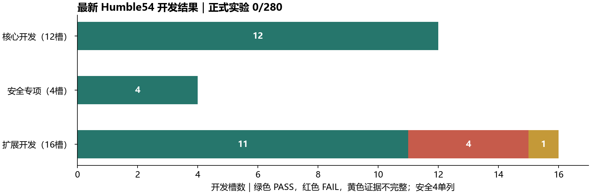
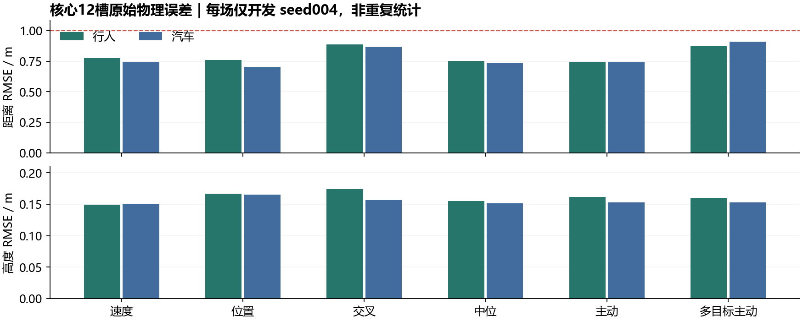
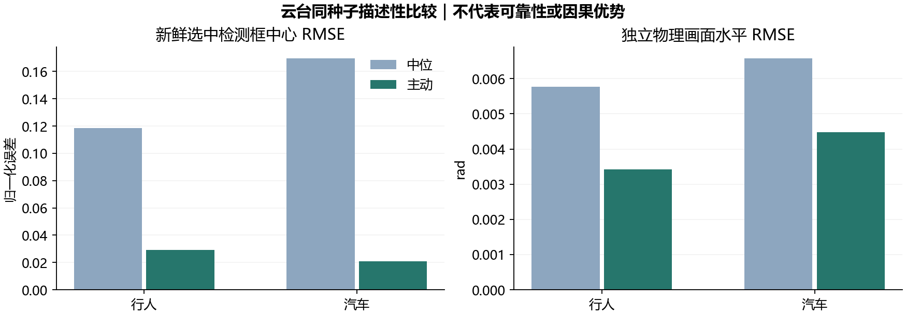
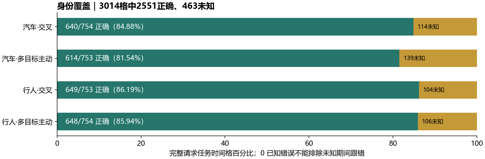

一、整体结论与停止范围
本项目已形成可运行的三阶段仿真系统，完成了行人/汽车检测、RGB-D三维定位、目标身份管理、卡尔曼状态估计、PX4闭环跟随和三轴云台协同。最新 Ubuntu 22.04 / ROS 2 Humble 开发核心12槽全部通过，独立歧义安全专项4槽全部通过；扩展16槽中11通过、4失败、1证据不完整。全项目最终验收尚未完成。
按用户最新要求停止实验，持续实验目标已设为 paused。停止时没有相关仿真、飞控、回放或实验运行器进程；不会因之后磁盘空间变化而自动续跑。本报告只整理已有资料和生成文档，不启动新的仿真、录包、推理、重放或实验评价。
| 证据层级 | 已完成 | 尚不能代表 |
|---|---|---|
| 三阶段功能实现 | 三阶段功能和仿真闭环均已存在 | 全部场景可靠或实机可直接飞行 |
| Humble54开发验证 | 核心12/12；安全4/4；扩展16/16终态 | 正式多种子验收或总体成功率 |
| v4正式实验 | 0/280；120核心＋160扩展均未执行 | 280次已失败、已完成或已得到统计结论 |
| 历史v3归档 | 主研究166次＋独立扩展16次已登记 | 最新Humble版本的验证结果 |

最准确的项目定位是：三阶段仿真原型已实现，最新核心开发验证通过；压力工况与证据完整性仍有缺口，正式重复研究和最终统计交付未完成。本报告是停止时点的整体报告，不是全部验收通过证明。
二、研究目标、范围与三阶段实现
研究对象为携带RGB-D云台相机的仿真无人机，目标类别为行人和汽车。核心任务是在可见性、身份和数据时效满足条件时估计选定目标的三维位置/速度，并保持设定跟随距离和高度；遇到歧义或持续失锁时进入保护状态。
| 阶段 | 已实现内容 | 停止时验证边界 |
|---|---|---|
| 阶段一 | YOLO11、深度ROI质量检查、坐标变换、6维KF、速度/位置控制、短遮挡预测、长丢失悬停与重选 | 两类速度/位置核心场景通过；多种子可靠性未验证 |
| 阶段二 | 唯一实例自动锁定；多候选歧义；初始框选指定个体；三维关联、任务UUID与轨迹ID分离；禁止自动换目标 | 交叉核心两场和独立安全4场通过；仍有463个身份未知时间格 |
| 阶段三 | 三轴物理云台、编码器反馈、图像采集时刻动态TF、视线跟踪、画面水平、机体慢偏航回正 | 中位、主动、多目标主动共6核心槽通过；未形成正式重复优势结论 |
唯一实例模式要求只有一个符合类别且满足初始化条件的候选，多于一个时拒绝自动选择。指定个体模式由用户或脚本先选框，之后持续维护该任务身份；短时失去观测可以预测，超期丢失则悬停并等待显式重选。稳定的target_uuid只是任务标识，不能作为真实物理身份正确的证明。
第一版没有完整外观ReID，因而不承诺长时间离开画面后自动认回原个体。自动避障、开放环境搜索、真实机飞行以及更多类别均不在本次已验证范围。框选入口已经实现，但正式研究中的自动脚本选框与完整交互式用户体验是不同验收对象。
系统按可迁移的接口划分算法和环境依赖；这种结构有利于移植，但迁移到真实RGB-D相机、云台和飞控后仍须重新校准内外参、深度范围、时间同步、坐标约定、噪声模型、控制参数和失效保护。仿真通过不等于免验证的实机可用。
三、技术架构、坐标与安全策略
运行管线：RGB-D图像 → YOLO11检测 → 二维/三维轨迹关联 → 目标选择 → 深度反投影 → 采集时刻相机/世界变换 → 三维状态估计 → 跟随控制 → PX4 Offboard。云台通过关节反馈提供动态相机姿态，独立的离线真值通道负责评价。
| 接口/模块 | 职责与实现边界 |
|---|---|
| SensorAdapter | RGB、Depth、CameraInfo、同步时间戳与TF；拒绝无效深度和不完整几何证据 |
| VehicleStateAdapter / PX4Adapter | 有效位置/姿态/速度、源时钟和reset保护；统一ENU/FLU与NED/FRD转换 |
| TargetManager | track_id与target_uuid分离；高置信度初始化、保守三维关联、歧义与LOST锁 |
| StateEstimator | 状态[x,y,z,vx,vy,vz]；位置观测、协方差、新鲜度与马氏距离门控 |
| FollowController | 世界坐标下距离/高度跟随；速度和位置设定值按参数择一发布 |
| GimbalAdapter | 三轴命令、真实关节反馈和动态TF；云台视线与机体跟随分工 |
指定目标的表面三维测量与飞行导航参考不是同一物理量。目标可见面会随视角变化，直接把表面点当成固定目标中心容易引入跟随距离偏差。新版引入地面投影参考、汽车可见面几何和相机/机体位姿不确定性，并分开报告base_link、model_origin与表面锚点误差。
安全规则保持原值：最大观测年龄0.60 s、最大预测时长0.75 s、登记马氏门9.21；丢失后必须显式重选，不自动选最近目标或最高置信度目标。运行目标关联禁止读取Gazebo实体名称和真值身份；真值只用于离线检查。模型族尺寸先验属于事先固定的建模条件，应披露其仿真依赖，不能称为任意车辆都适用。
相机跟随图像视线，机体按世界坐标相对位置保持距离/高度，机体偏航再慢速回正，避免云台长期触限。云台和无人机没有同时把同一个图像中心误差直接当成独立飞行控制输入。
四、验证环境与本轮主要修复
历史v3正式归档使用Ubuntu 24.04 / ROS 2 Jazzy。后续已建立独立的Ubuntu 22.04 / ROS 2 Humble WSL2环境，并在Humble54完成真实冷构建、导入隔离、生成CDR与完整Linux测试。原计划中的22.04/Humble已获得开发级实际证据，尚没有该环境下的280次正式研究。
| 项目 | 已有证据 | 限制 |
|---|---|---|
| ROS 2与构建 | Humble；4个ROS软件包冷构建与来源隔离检查通过 | 不能用Windows测试代替Linux运行检查 |
| 完整Linux测试 | 2021项：2016通过、5项平台条件跳过 | 跳过不计为通过；仅指该冻结版本 |
| 仿真与飞控 | Gazebo Harmonic、PX4 v1.17系列、uXRCE-DDS、匹配px4_msgs；独立运行清单 | 含本项目兼容补丁和独立二进制，不能简化为无补丁原版 |
| 资源策略 | llvmpipe CPU渲染；请求仿真倍率0.125；75 s任务窗口 | 没有证据证明1倍实时运行或满足实机延迟预算 |
| 汽车检测 | 实际核心计划为仿真微调YOLO11m，512输入、4线程 | 基础YAML默认值不代表原场真实运行配置 |
| 修复方向 | 具体工作及得到的证据 |
|---|---|
| 汽车检测与关联 | 诊断推理尾延迟；调整输入/线程；高阈值0.45初始化、低阈值0.25仅维护已有三维轨迹；不允许弱框出生或解除LOST |
| 物理跟随与稳定性 | 区分可见面/地面参考/机体控制点；位置设定值加入实际机位反馈；末段稳定按持续有效窗口判断 |
| PX4与时间链 | 原生起飞后再Offboard；磁坐标与动态库来源登记；源时间和独立墙钟停流保护；时钟桥和数据桥分离 |
| 录包与生命周期 | 关键证据流QoS、完整关闭、压缩字节往返与原生读回；进程创建身份、终态、清理和监督器接续审计 |
| 评价与缺失处理 | 物理距离/高度、固定10 Hz身份分母、缺证/删失单列；保留旧FAIL，不拼接不同冻结来源的成功槽 |
这些改动的效果由后面的开发结果限定。已有单元测试、构建和进程退出证明工程链条的相应部分有效，不能单独代替飞行行为、目标身份或论文统计结论。
五、最新核心12场开发结果
以下数据全部来自Humble54同源核心开发批次，开发seed004，每个任务持续75 s。12槽原始终态均为PASS，来源时钟、原生启动、对应行为检查以及末段距离/高度稳定检查已闭合。每行是一种场景的一次开发试验，不是10次重复的均值。
| 类别 | 场景 | 距离RMSE/m | 高度RMSE/m | 导航覆盖 | 原结果 |
|---|---|---|---|---|---|
| 行人 | 速度控制 | 0.7730 | 0.1496 | 91.49% | PASS |
| 行人 | 位置控制 | 0.7585 | 0.1664 | 91.62% | PASS |
| 行人 | 交叉 | 0.8860 | 0.1738 | 89.10% | PASS |
| 行人 | 云台中位 | 0.7509 | 0.1555 | 91.49% | PASS |
| 行人 | 主动云台 | 0.7458 | 0.1613 | 91.62% | PASS |
| 行人 | 多目标主动 | 0.8713 | 0.1604 | 88.83% | PASS |
| 汽车 | 速度控制 | 0.7418 | 0.1503 | 91.62% | PASS |
| 汽车 | 位置控制 | 0.7049 | 0.1657 | 91.37% | PASS |
| 汽车 | 交叉 | 0.8683 | 0.1567 | 90.04% | PASS |
| 汽车 | 云台中位 | 0.7331 | 0.1512 | 91.48% | PASS |
| 汽车 | 主动云台 | 0.7391 | 0.1529 | 91.49% | PASS |
| 汽车 | 多目标主动 | 0.9097 | 0.1528 | 88.70% | PASS |

登记的主要工程要求为距离RMSE≤1.0 m、高度RMSE≤0.4 m、有效导航覆盖≥0.80、独立真值覆盖≥0.99，并要求末段持续稳定；指定个体组还要求完整任务身份覆盖≥0.80。工程PASS是多个检查的合取，不表示任务中从未丢失、没有未知区间或每个局部窗口都通过。
本批可支持“修复后的核心场景已在一个开发种子上跑通并通过登记门槛”。它不能支持汽车可靠性达到100%、不同运动/目标外观都适用、原v3失败已被消除，或正式总体成功率已提高。
六、扩展工况与保留的失败
最新扩展probe02覆盖两类别×8条件，共16个开发槽，均有终态：11 PASS、4 FAIL、1 INCOMPLETE_EVIDENCE。本批原槽均完成飞行、flight_exit_code=0且未登记基础设施停止；进程正常结束不改变行为失败或证据不完整的判定。
| 扩展条件 | 行人结果 | 行人距/高RMSE·m | 汽车结果 | 汽车距/高RMSE·m |
|---|---|---|---|---|
| 深度噪声 | PASS | 0.7666 / 0.1604 | PASS | 0.7356 / 0.1481 |
| 深度空洞 | PASS | 0.7434 / 0.1624 | PASS | 0.7232 / 0.1697 |
| 检测丢帧 | 证据不完整 | 0.7169 / 0.1557 | FAIL | 3.0726 / 0.1537 |
| 通信延迟 | PASS | 0.7924 / 0.1591 | PASS | 0.7420 / 0.1545 |
| 组合故障 | FAIL | 2.2219 / 0.1664 | FAIL | 2.0369 / 0.1604 |
| 加减速·速度控制 | PASS | 0.6429 / 0.1453 | PASS | 0.6429 / 0.1607 |
| 加减速·位置控制 | FAIL | 0.6493 / 0.1659 | PASS | 0.6179 / 0.1691 |
| 远距离 | PASS | 0.7800 / 0.1541 | PASS | 0.6594 / 0.1542 |
上表物理误差直接取各原槽绑定的导航报告，保留丢失/悬停尾段；不是尚未执行的final55完整28槽导航重评。行人组合故障约2.222 m、汽车丢帧约3.073 m和汽车组合故障约2.037 m的距离RMSE均超过1.0 m要求，这些失败的高误差没有从统计中删除。
| 未通过项 | 原始证据与应当怎样解释 |
|---|---|
| 行人·检测丢帧（证据不完整） | 短遮挡的detector_interruption_observed为null；已有原图能支持画面遮挡，但未补齐原评价所需检测中断证据，不能改判PASS |
| 行人·组合故障（FAIL） | 长遮挡prediction_observed=false；窗内未观察到预测阶段，未完整验证跟踪→预测→丢失悬停流程；其余保护及重选检查通过，原FAIL保留 |
| 汽车·检测丢帧（FAIL） | 短遮挡no_loss_during_short_occlusion=false，长遮挡prediction_observed=false；短期观测中断仍可能越过预测预算 |
| 汽车·组合故障（FAIL） | 长遮挡prediction_observed=false；原surface_flight失败保留，不能用录包读通或后续重选成功抵消 |
| 行人·加减速位置控制（FAIL） | 距离RMSE约0.6493 m达标，但final_distance_settled=false；高度及其他登记数值门通过，持续稳定问题仍存在 |
行人/汽车丢帧合同短窗已分别有原始图像提取和独立阅图记录；组合故障的合同短窗提取/阅图及完整四槽正式绑定尚未齐全。事后诊断窗、原图可见性和行为验收是不同证据，不能互相替代。现有失败首先提示测量连续性、预测期限与任务工况之间的关系，尚不能用单一根因解释全部失败。
扩展失败会保留在本报告和原台账中。没有通过减少工况、提高预测期限、放宽0.60/0.75 s安全限制、删除失败试验或重飞原槽来制造全通过结果。
七、四个主要剩余问题的解决程度
| 问题 | 已经做到 | 仍然缺少 |
|---|---|---|
| 汽车跟随可靠性 | 汽车6个核心场景全部PASS；延迟、噪声/空洞、变速两控制模式、远距离扩展通过 | 丢帧与组合故障仍FAIL；未做正式多种子重复，不能给总体成功率 |
| 距离/高度稳定性 | 核心12场末段稳定全部通过；汽车两变速控制扩展通过 | 行人加减速位置控制末段距离持续稳定验收未通过；低RMSE不足以说明这一项已解决 |
| 主动云台整体效果 | 两类中位/主动/多目标主动核心均PASS；新鲜框中心与画面水平有实测改善 | 没有正式10对重复；居中改善尚不能推出身份、闭环可靠性或所有误差均改善 |
| 身份与算法结论 | 固定完整任务分母、未知原因细分与证据保护已实现；4多目标槽已可核查 | 463个身份未知格、独立可见标签复核、正式四法配对比较和统计结论仍未完成 |

行人中位/主动的归一化中心RMSE分别为0.118654/0.029227（有效717/719个样本）；汽车为0.169487/0.020818（713/707个样本）。中心指标统一取原槽绑定navigation_reference_evaluation的visual_control_metrics；gimbal_evaluation有自己的时窗/样本数，不能混用。独立物理画面水平RMSE取云台评价，分别为行人0.005764/0.003428 rad、汽车0.006573/0.004484 rad。
汽车中位/主动距离RMSE分别为0.733114/0.739092 m，后者略大；行人为0.750936/0.745811 m。两个任务均已通过工程门，但数据不支持“主动云台在所有闭环指标上更好”。这里没有可估计的重复间变异或显著性区间。
八、身份覆盖、未知样本与评价边界
“未知样本”指评价系统无法用独立证据确定当时是否跟随原指定物理个体的时间格。例如某0.1 s格内只有预测状态，没有新鲜目标检测；或目标被遮挡、多个物体都可能解释当前框。UUID没变、预测轨迹平滑，都不足以把该格标为正确。未知不是已证实跟错，也不能按正确处理。
| 开发槽（均seed004） | 正确 | 已知错 | 未知 | 总格 | 已知覆盖 |
|---|---|---|---|---|---|
| car_stage2_crossing | 640 | 0 | 114 | 754 | 84.88% |
| car_stage3_multi_active | 614 | 0 | 139 | 753 | 81.54% |
| person_stage2_crossing | 649 | 0 | 104 | 753 | 86.19% |
| person_stage3_multi_active | 648 | 0 | 106 | 754 | 85.94% |

四槽描述性合计为3014个时间格，2551正确、0已知错误、463未知；已知覆盖约84.64%，未知约15.36%。3014格不是3014次独立试验，不能据此计算实验级可靠性置信区间。其余24个核心/扩展槽没有指定身份摘要，不等于24次身份失败。
分母从首次显式REQUEST到最后记录的/clock，按固定10 Hz划分；REQUEST前起飞不在其中。之后的未确认、清除/重置、任务切换、长时失锁悬停和缺独立新证据时段均保留，不按FOLLOW筛掉，不前向填充身份标签。任务重选会开启新任务，不能称为原个体自动ReID成功。
汽车交叉114个未知格：尚未确认2、格内无证据13、已有证据仍未知99；汽车多目标主动139格：2、41、95，另任务边界1格。逐检测帧另有“无新鲜选中检测”73/70帧、“遮挡已知或无法排除”26/25帧；逐帧与时间格是两个分母，不能相加。
当前正确/错误标签来自原离线几何与遮挡保护评价，不能自动升级为完整独立可见图像真值。0已知错只说明已有可判定证据中未报告错误，不能证明未知时段没有切换，也不能推出全程ID Switch=0。IDF1/HOTA、重捕获率/时间必须注明标签协议、分母和缺失，不应从UUID稳定或单幅图像补算。
九、卡尔曼滤波、检测与论文结论
计划中的主线比较为原始三维测量、EMA或α-β、固定参数KF、自适应观测噪声KF。新版已具备真实录包导出、同测量重放、源一致性检查、参数定标和配对统计工具；两类开发录包导出与R0候选也已完成。R0仍明确为CANDIDATE_NOT_REGISTERED / DEVELOPMENT_ONLY，尚未正式登记采用。
| 研究问题 | 当前可用材料 | 本报告允许的结论 |
|---|---|---|
| 四估计器误差比较 | 历史v3统计、开发导出/候选参数、重放工具 | 有比较基础；新版正式留出集结果尚不存在 |
| 自适应观测噪声 | 表面检测/深度质量链；导航几何与位姿不确定性链 | 两套观测模型应分别解释；不能把geometry自适应等同置信度/深度质量模型 |
| 闭环收益 | 最新飞行采用登记方案，各场景原误差可查看 | 同录包离线重放只能给条件估计误差比较，不能证明不同滤波器闭环因果收益 |
| 检测Precision/Recall/mAP | 已有检测来源/标签/评价工具及相关历史材料 | 尚无本轮最终独立可见标签完整精度结论，不能由检测可用率推算mAP |
| 速度、FPS与延迟 | 仿真FPS、墙钟推理时间、软件候选延迟各有定义 | 分别标明时间域和分母；不合并为实机实时性 |
历史v3已有一次主研究归档和四基线材料，应按原失败、证据完整性与其实际环境引用。现有材料不支持“自适应KF在所有指标上更好”。论文应报告在哪些距离、噪声、运动和遮挡条件下误差降低或升高，以及输出缺失/失锁的代价。
若将来恢复正式研究，应先固定R0/α-β/EMA参数、模型权重、评价协议和源码，再使用留出种子1000–1009；相同轨迹/种子/控制参数下配对。统计单位是trial/seed，不是同一飞行内的帧。失败、未知、缺失与右删失必须保留，并与可评分算法错误分开报告。
本次停止后不再补做上述研究。报告可以作为系统设计、实现与开发验证章节材料，但不能作为280次正式研究已经完成的论文依据。
十、软件时序诊断与性能优化
为查清检测、估计、控制与适配器间的数据路径，已对两类已有输入进行独立完整软件回放。两次都回放50,117条输入，相关进程正常退出。软件时延起点是所用RGB/Depth中较晚的原始回调入口，终点是适配器TrackingCommand订阅回调入口；不含物理曝光与PX4执行器响应，且存在观察钩子开销。下表只统计形成全链候选关联的FOLLOW命令，非FOLLOW和无候选RGB全部保留。
| 类别 | 输入条数 | FOLLOW候选/命令 | 非FOLLOW | 有链RGB/全部 | 中位/s | p95/s | 最大/s |
|---|---|---|---|---|---|---|---|
| 行人 | 50117 | 1377/1857 | 480 | 680/928 | 1.006 | 1.158 | 5.524 |
| 汽车 | 50117 | 1377/1854 | 477 | 681/927 | 1.150 | 1.546 | 5.546 |
行人的三条DDS边候选数为752/4511/1857，汽车为747/4508/1854。受控环境中的候选匹配说明相应发送/接收记录可连接；图查询是轮询式的，不能完全证明外部writer从未存在，因此不能把“candidate”升级为严格已证实链路。
物理端到端时延仍为NOT_OBSERVED。这里没有相机物理曝光至PX4实际执行的完整独立时钟/身份闭合证据；旧严格统计1857/1857 UNKNOWN保留。477/480条非FOLLOW命令不等于相同比例的算法失败，它们可能是保护状态命令，分母和任务语义必须另看。
回放时延表是本台架、该候选子集及其墙钟条件下的诊断统计，不能当作正式飞行控制延迟、全部RGB帧延迟或实际硬件实时预算。最新仿真采用0.125倍率，也不能将仿真频率直接解释为1倍实时运行能力。
已将trace汇总改为索引查询、严格区间二分及分块读取。对完整行人原trace复算，27项归约字段与原结果精确一致，原件SHA不变；调用约55.484 s，采样RSS约6.10 GiB。没有原归约器单独计时，因而不报告实测加速倍数。六摘要可视化页已通过5个浏览器视图和13项交互检查。
十一、停止原因与存储优化的实际结果
完整280次实验的已生成预算需要244.9361 GiB。报告生成时D盘可用约91.08 GiB，与原要求相减仍缺约153.86 GiB。这是对原预算的算术对照，不是重新执行容量准入；磁盘尚有可用空间，但不足以承载已约定的完整研究及预留。
| 预算组成 | 需要空间/GiB |
|---|---|
| 280槽持久结果与证据 | 204.9780 |
| 后续构建与交付预留 | 22.0000 |
| 临时峰值预留 | 17.9581 |
| 合计 | 244.9361 |
完整28槽文件占用实测、两类开发录包导出和定标候选已经完成；原测量经历7步后失败，再由另一个显式续接完成6个命令，最终仍被正容量条件拒绝。不能把它写成“完整流程12步成功”。ext4逻辑容量能够满足，但D盘宿主物理卷容量不足，后者是实际阻断。
无损压缩19/22级比较也已实际运行：首个汽车基础包19级完成字节一致性和原生读回验证；22级因固定900 s总预算耗尽而超时，另外两个候选未尝试。完成配对数为0，可证明并计入预算的容量收益为0，生产压缩策略未改变。该次停止不是已证实内存不足。
所有原始归档和失败记录均保留；没有因本次生成报告删除项目数据或用户其他文件。没有新增正容量复核、没有实际final55冷构建或正式矩阵。默认关闭且未登记的暂存候选只是准备工具，不能当作正式环境已经存在。
本次停止是用户明确决定，并由现实存储缺口支持；不是正在飞行的任务被隐瞒中止。停止时最后的重任务已经退出，Linux只读进程查询无匹配；Windows中残留的WSL idle tail只是环境保活，不表示实验仍在执行。后续必须由用户明确要求恢复，才重新核验空间、环境和原证据链。
十二、历史成果、本次交付与查看方式
历史v3已经有报告、计划书、视频、图表、指标与原始归档。其执行完毕不代表全部工程验收通过；本轮Humble54开发成功也不反向改变历史失败。以下原结果保留，用于说明最初问题和研究沿革。
| 历史v3范围 | 终态 | PASS | FAIL | 中断 |
|---|---|---|---|---|
| 阶段一 | 100/100 | 66 | 34 | 0 |
| 阶段二 | 26/26 | 19 | 7 | 0 |
| 阶段三 | 40/40 | 22 | 17 | 1 |
| 主研究合计 | 166/166 | 107 | 58 | 1 |
| 独立工程扩展 | 16/16 | 2 | 14 | 0 |
历史主离线台账为160 RECORDED、4 INCOMPLETE_EVIDENCE、2 NOT_APPLICABLE_NO_SELECTED_TASK；扩展补充为15 RECORDED、1 INCOMPLETE_EVIDENCE。工程FAIL包含可评分行为失败、基础设施失败和证据不全等情况，不能直接当成检测/跟踪算法失败率。
| 资料 | 本机入口（相对仓库根目录） | 作用 |
|---|---|---|
| 本次报告 | docs/project-overview-20261103/index.html；同目录Word/PDF/Markdown | 停止时点整体状态、图表、结论和来源 |
| 最新开发成果 | results/diagnostics/humble54_development_view01/index.html | 开发录像、场景与原报告 |
| 扩展终态页 | results/monitor_humble54_probe02_owner07/index.html | 16槽闭合结果；不是运行中的任务 |
| 计时可视化 | results/diagnostics/humble54_pipeline_timing_view01/index.html | 6份软件诊断摘要，可切换分母/样本 |
| 身份原因细分 | results/diagnostics/humble54_identity_coverage_readonly01/ | 身份计数、未知原因与绑定原件 |
| 历史统一交付 | results/frozen_fullplan_v3/交付入口.html | 5页计划书、144页归档报告、8段视频和6组图表 |
| 源码仓库 | https://github.com/gurkemctigue-arch/kalman-filter-drone | 源码、测试、文档；不等于原始录包备份 |
原始bag、权重、ROS构建目录和多数results数据不随常规Git提交；克隆GitHub后不能期待全部本机录像与实验原始数据自动出现。本次报告的来源清单只记录所用小工件的相对路径、大小和SHA，不包含用户磁盘清理清单或其他私人目录信息。
十三、未完成清单与恢复条件
以下是停止时保留的工作清单，不是已获指令自动续跑的队列。本次交付后不再继续实验。当前没有足够资源和正式验证结果，不能给出有依据的最终完成日期。
| 顺序 | 待完成工作 | 完成条件 |
|---|---|---|
| 1 | 实验容量复核 | 实际可用宿主物理空间满足完整预算与峰值预留；原生空闲/清单/预算重新产生真实回执 |
| 2 | 独立final55暂存与冷验证 | 实际源码/环境/模型清单、4包冷构建、Linux与来源隔离检查闭合 |
| 3 | 导航与传感器证据 | 完整28槽导航复评与真实sensor4合同绑定；组合故障短窗阅图补齐，原FAIL不改 |
| 4 | 定标和前瞻登记 | R0/其他参数、正式120核心/160扩展、身份恢复/检测补充协议在正式START前冻结 |
| 5 | 正式实验280次 | 留出种子1000–1009；逐槽仅按登记尝试，保留失败、中断、缺证及原始数据 |
| 6 | 算法/身份/检测统计 | 20条正式录制的四法配对；标签审查、IDF1/HOTA和重捕获指标；完整分母与区间 |
| 7 | 最终交付与论文 | 用正式结果更新图表/视频/报告/计划书；逐项核验，写明未过门或不适用项 |
如以后资源仍有限，可以另立规模更小的新研究协议，但应明确它与本次280次计划不同；不能直接减少原计划分母、沿用“全部正式实验完成”的标题或把开发种子改称留出种子。本次并未执行这种变更。
对毕业设计当前最有价值的可交付成果，是三阶段完整仿真原型、Humble环境实际构建/运行证据、核心场景开发通过、压力工况失败分析和可追溯评价方法。最需要谨慎的研究主张，是总体可靠性、任意遮挡下指定身份保持、实机实时性以及自适应KF的普遍优越性。
最终结论：本次工作已从早期低可靠性归档推进到同源核心开发12/12及独立安全4/4通过，但扩展仍有4 FAIL和1证据不完整，身份存在463个未知时间格，新版正式研究为0/280。按用户要求现停止实验并保留所有现有材料；全项目不标记为验收完成。
附录：主要证据与阅读口径
本报告仅整理已存在的小JSON、配置和文档；没有重评原始bag、重新推理图像或将新诊断写回旧结果。完整来源指纹见同目录report.sources.json，逐槽结构化表见report_data.json。表中“已实现”“开发PASS”“正式完成”“证据完整”是不同判断。
| 编号 | 证据 | 相对仓库根目录路径 |
|---|---|---|
| A01 | 历史v3结果口径 | docs/DELIVERY_STATUS.md |
| A02 | 最新核心12闭合 | tools/experiment_orchestration/humble54_core12_closed01/README.md |
| A03 | 独立安全4闭合 | tools/experiment_orchestration/humble54_safety4_closed03/README.md |
| A04 | 扩展probe02与核心原终态 | results/frozen_fullplan_v4_humble54/（两个matrix/slots目录） |
| A05 | 真实Humble54冷验证 | results/frozen_fullplan_v4_humble54/freeze_validation/native_build_supplement02.json |
| A06 | 完整28槽容量实测 | results/frozen_fullplan_v4_humble54/full28_storage_measurement_probe02_after07_01/summary.json |
| A07 | 原完整280预算 | results/frozen_fullplan_v4_humble54/full280_storage_budget_probe02_after07_01/budget.json |
| A08 | 容量拒绝说明 | results/diagnostics/humble54_after28_budget_review01/review01.json |
| A09 | 定标候选 | results/frozen_fullplan_v4_humble54/reliability_v4_humble54_development_calibration_probe02_after07_01/R0_candidate.json |
| A10 | 身份覆盖与汽车细分 | results/diagnostics/humble54_identity_coverage_readonly01/ |
| A11 | 完整两类软件回放 | results/diagnostics/humble54_pipeline_timing_full_person01/；同前缀car01/ |
| A12 | 压缩实测停止 | results/diagnostics/humble54_lossless22_bench_execution01/review01.json |
| A13 | 本次停止记录与来源SHA | docs/project-overview-20261103/stop_state.json；report.sources.json |
冻结实验根/root/uav_tracking_fullplan_v4_humble54没有因本报告被修改。源码检查点为26958c7da0d3d90e6b78dd004215aebb82cca571（报告生成之前）；后续文档提交不会使该检查点成为新的正式实验版本。
图表全部从表内同批次已有结果生成，未作跨版本配对；空值不填0，未知不删除。部分旧状态页包含过去“正在运行”的历史文字，应以本报告日期和stop_state.json为停止状态入口。
本机可视化成果
以下链接指向已有本机结果，GitHub克隆不包含原始results目录。